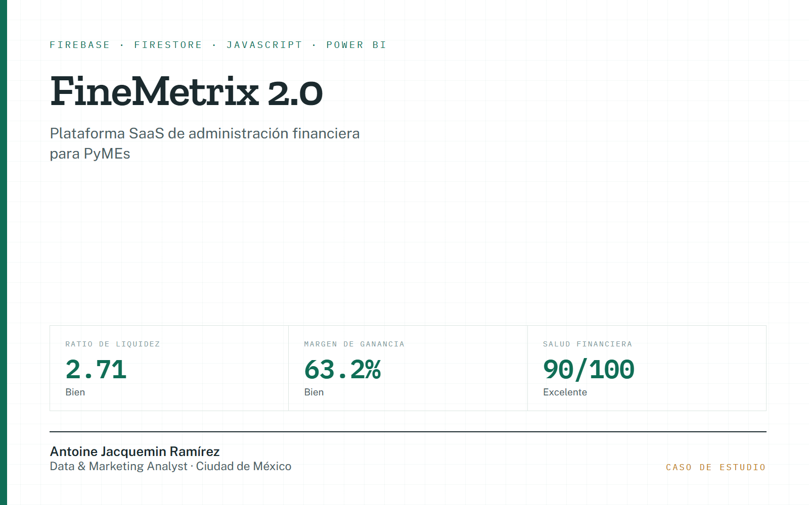

FineMetrix 2.0
Plataforma SaaS de administración financiera para PyMEs, en producción sobre Firebase. Un motor CFO calcula ratios de liquidez, margen y un índice de salud financiera; alrededor viven los módulos de operaciones, cobranza, capacidad de deuda, rentabilidad por SKU, simulador what-if, calendario fiscal y generación de reportes en PDF. Con Firestore y reglas de seguridad por organización.
- Power BI
- Google Analytics
- Firebase
- Firestore
- JavaScript
Para qué se usóPara que una empresa vea su liquidez, su margen y un score de salud financiera todos los días, sin esperar al cierre contable.